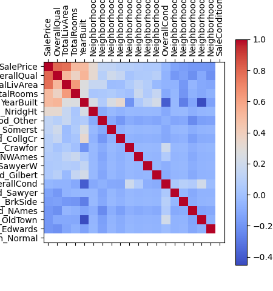
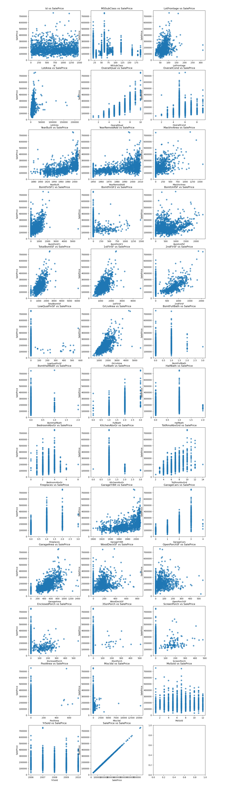

First ML project—predicting house prices with random forests and a neural net. A learning milestone, it became a lesson in feature engineering, model tuning, and how models can (and can’t) capture the story of a home.
Project Links
This one’s due for renovation. Thrown together during the final survival-mode sprint of an intense bootcamp, it was my first machine learning project—and it shows. While functional, it reflects burnout more than best practices. I’ve since revisited machine learning* and plan to toss the neural net, overhauling this with logistic regression and tree-based models, and applying stronger evaluation and design techniques. Time to give it the remodel it deserves (pun absolutely intended).
But first: a little interleaved learning and a recharge. Spaced repetition and a scenic detour. I’m taking R for a walk… to Mordor.
Project Overview
I began with exploratory data analysis to investigate key factors affecting home values, address missing data, and prepare features for modeling. Then I built two predictive models: a neural network using TensorFlow and Keras, and a random forest to offer a more interpretable baseline.
After hyperparameter tuning, I compared performance using residual plots, scatter plots, and training loss visualizations. Each model offered different strengths in handling complexity, variance, and interpretability.
While the neural net was arguably overkill for this dataset, the project was a vital hands-on introduction to machine learning pipelines, model evaluation, and the tradeoffs between black-box and tree-based methods.
Translation: This was baby's first machine learning project, and I used a neural net before I knew better.
In 2025, I enroll in Google's
Advanced Data Analytics Certification
(done!), Harvard's
Artificial Intelligence
course
(done!), and Stanford's
Introduction to Statistical Learning with
Python
or
R.
Gallery
 Correlation heatmap: Sale price is most strongly linked to overall quality, total living area, number of rooms, and year built.
 Scatter plots: Exploring how a wide range of features relate to sales price, highlighting the dataset’s rich potential for machine learning.
References
Dataset from the Kaggle House Prices: Advanced Regression Techniques competition.